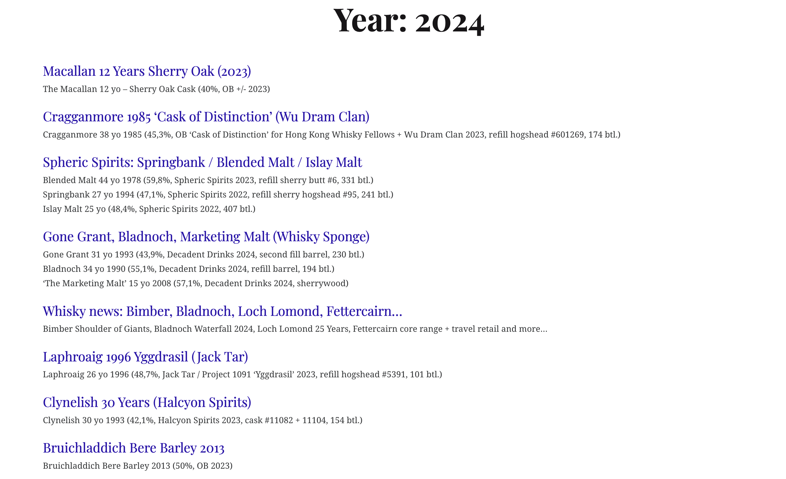

Code
library(tidyverse)
library(rvest)with whiskynote.be data
Tony Duan
Web scraping on www.whiskynotes.be

---
title: "One year page review"
subtitle: "with whiskynote.be data"
author: "Tony Duan"
execute:
warning: false
error: false
eval: false
format:
html:
toc: true
toc-location: right
code-fold: show
code-tools: true
number-sections: true
code-block-bg: true
code-block-border-left: "#31BAE9"
---
```{r}
library(tidyverse)
library(rvest)
```
```{r}
packageVersion("rvest")
```
Web scraping on www.whiskynotes.be
# year page
```{r}
year_ur='https://www.whiskynotes.be/2023'
```

# read in html
```{r}
year_page <- read_html(year_ur)
```
# review bottle name on one year
```{r}
bottle001 <- year_page %>% html_elements("p")%>% html_text2()
bottle001[length(bottle001)]
```
```{r}
# drop last one which is not bottle
bottle002=bottle001[-length(bottle001)]
head(bottle002,3)
```
```{r}
length(bottle002)
```
```{r}
# split to each bottle
bottle003=unlist(strsplit(bottle002,"\n"))
```
```{r}
head(bottle003,5)
```
```{r}
length(bottle003)
```
# review topic name on one year
```{r}
topic001 <- year_page %>% html_elements(".archive-link") %>% html_text2()
head(topic001)
```
```{r}
length(topic001)
```
# review topic link on one year
```{r}
topic_link_list <- year_page %>%
html_elements(css = ".entry-permalink")%>% html_attr("href")
head(topic_link_list)
```
```{r}
length(topic_link_list)
```
# combine
```{r}
data=tibble(topic001,topic_link_list)
```
```{r}
bottle003=tibble(bottle003)
```
# output
```{r}
library(openxlsx)
list_of_datasets <- list("Name of DataSheet1" = data, "Name of Datasheet2" = bottle003)
write.xlsx(list_of_datasets, file = "on year page.xlsx")
```
# reference: